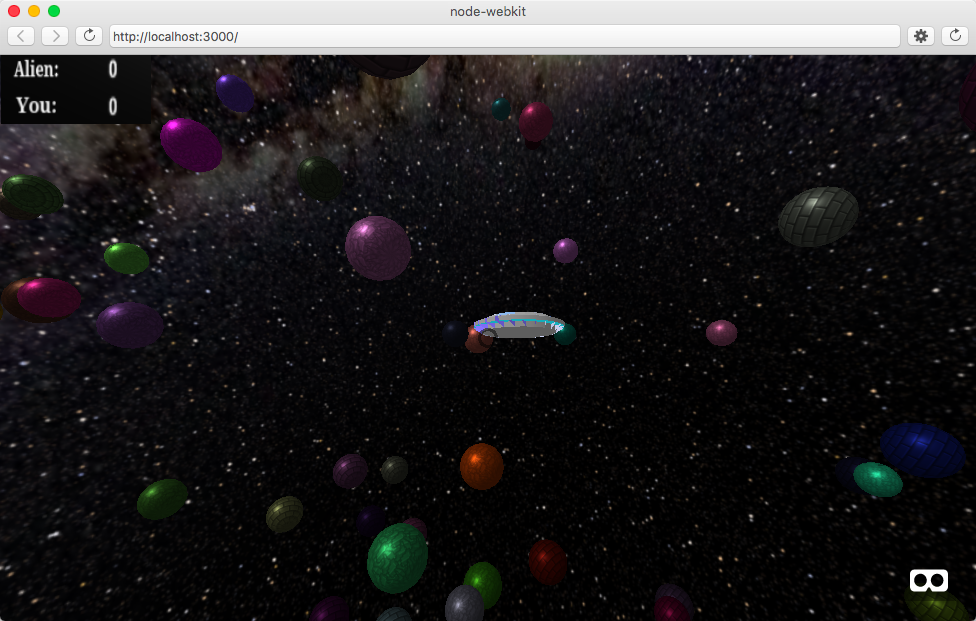

This week, we coded the goal of our game, fixed some persistent errors, and set up some cool features up to make our game more immersive
We implemented music, sound effects, rotation, and variation of alien life forms. We additionally implemented the 'enemy', which is essentially a large DAE ufo object that randomly traverses the universe until it gets close enough to a planet, and then 'collects' the life form on that planet and removes it from the world. Thus, the goal of the game is to collect life 4 life forms before the ufo does! A difficult issue was figuring out how to let the player know their score and the enemy's score. We had to make graphics online saying 'Alien:', 'You', and a bunch of .jpgs of numbers from 0 to 4. Using this, we created a container on the user camera with 4 planes as children within. The enemy and user each have two planes - one for their score, and one depicting whose score it is ('Alien:' or 'You:'). Then, we placed this container in the top left corner of the user's camera, and dynamically removed and added the score plane for the player and enemy, respectively. An issue, however, is when you resize the screen; the container and its planes are in fixed positions, so you could widen the screen as much as you'd like, and end up with the scoring system in the middle of the game. Thanks to much help from Professor Kapp, we were also able to implement a 'warp' effect for our players. When you center the cursor (or your VR headset) on a certain planet and tap on it, you enter lightspeed mode and 'warp' directly to the surface of the planet! From there, you can collect your life form with ease and leave the planet. An error that was troubling us this past week was how sometimes, depending on the angle at which the user approached the planet, you could land on the planet, yet still see the planet in the atmosphere! That took some simple removeChild() calls.
From here, all we really have left is to clean up the start/end screen for the game, fixing the scoring container resizing issue, and cleanup of code. Currently, if either the enemy or the user reaches 4 life forms collected, the user is transported back to (0,0,0), and is not allowed to move around anymore. Then, we present a plane with a graphic as an asset describing if the user or the enemy won. However, since the user can still rotate the camera, most of the time the plane is not facing the user when the game ends, and they have to rotate the camera to see the plane.
